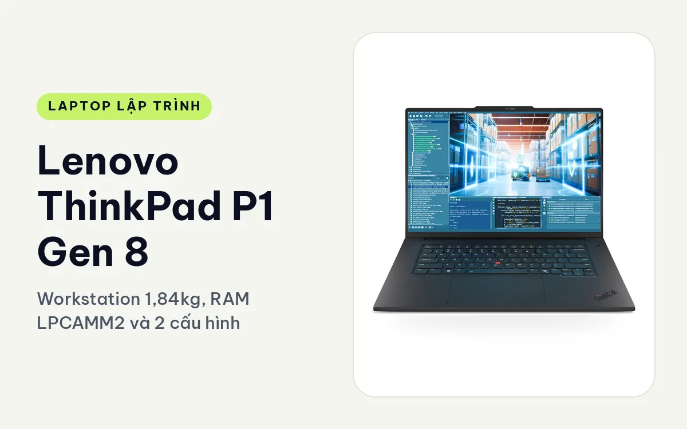
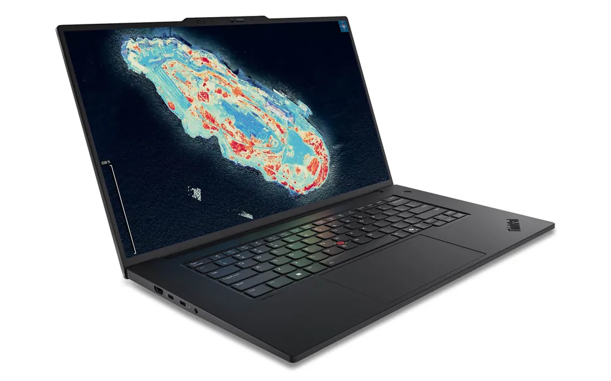
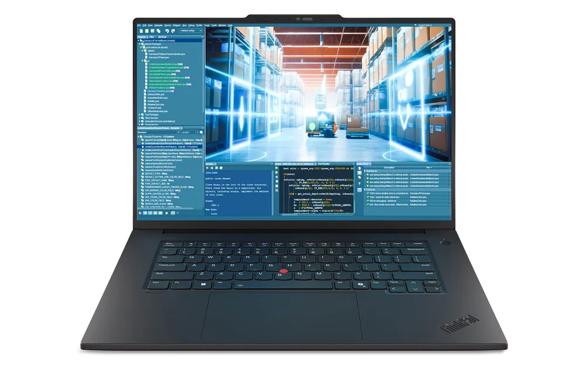
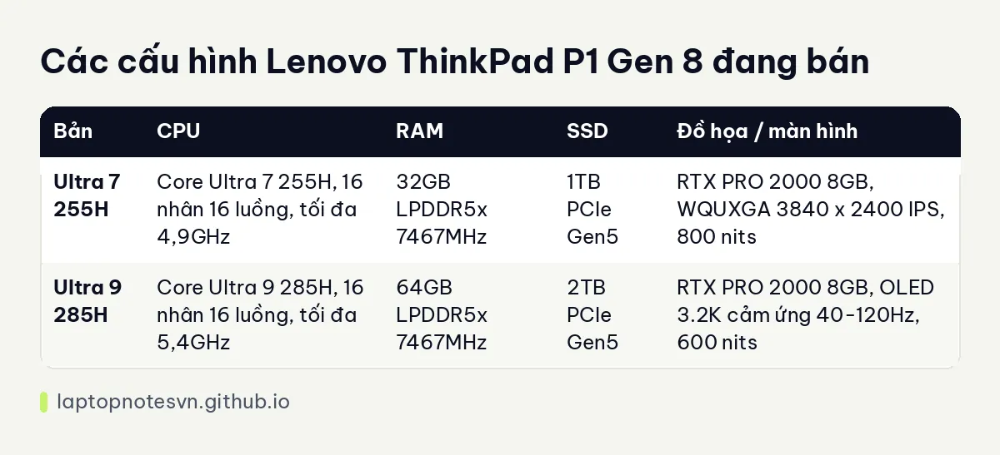

Lenovo ThinkPad P1 Gen 8 cho lập trình - Workstation 1,84kg, RAM LPCAMM2 và 2 cấu hình

Lenovo ThinkPad P1 Gen 8 (2025) là workstation di động 16 inch của Lenovo, xếp ở tầng cao nhất của dòng ThinkPad mỏng nhẹ. Người code AI, chạy CUDA, dựng hình 3D hoặc ôm nhiều máy ảo cùng lúc sẽ thấy máy này đáng cân nhắc hơn một chiếc laptop văn phòng thông thường.
Đổi lại, đây là máy cho người cần sức mạnh thật và sẵn sàng đầu tư. Dev web hay học code cơ bản dùng một nửa cấu hình này đã thừa, nên bài viết sẽ nói rõ từng bản hợp với ai.
Thiết kế
Khung máy làm từ hợp kim sợi carbon, đạt chuẩn MIL-SPEC, bề mặt phủ lớp chống trượt và chống bám vân tay, các góc bo tròn. Vỏ đen nhám mang dáng ThinkPad quen thuộc nhưng gọn hơn các đời workstation 16 inch trước.

Màn hình 16 inch tỉ lệ 16:10, tất cả tấm nền đều hiệu chuẩn màu X-Rite và có chứng nhận bảo vệ mắt TÜV Eyesafe. Nhà sản xuất có ba tùy chọn: WUXGA IPS tiết kiệm điện, WQUXGA 3840 x 2400 IPS và Tandem OLED 3.2K cảm ứng. Hai cấu hình đang bán dùng hai tấm sau.
Bàn phím có hành trình phím sâu, đèn nền, TrackPoint đỏ và touchpad rộng, kèm cảm biến vân tay và camera IR. Cổng kết nối khá đủ: hai cổng Thunderbolt 5, một cổng Thunderbolt 4, một USB-A 10Gbps, HDMI 2.1, jack tai nghe và đầu đọc thẻ SD Express 7.0. Máy có Wi-Fi 7 và Bluetooth 5.4, nên ít khi cần dock chỉ để có cổng.
Mang đi hằng ngày
Máy nặng từ 1,84 kg, kích thước 354,3 x 241,0 mm, dày tối đa 20,6 mm. Với màn 16 inch kèm card rời chuyên nghiệp thì đây là mức gọn, bỏ vừa ba lô laptop thông thường. Mang đi họp, đi khách hàng hằng ngày không quá nặng tay, nhưng vẫn nặng hơn hẳn máy 14 inch.

Trang mô tả ghi pin dùng khoảng 8 đến 10 giờ và có sạc nhanh. Số này tùy tải, còn khi chạy GPU hay build liên tục thì thời lượng ngắn đi nhiều. Dung lượng Wh và công suất củ sạc trong dữ liệu chưa nêu, nên anh chị hỏi lại cửa hàng trước khi mua nếu cần mang đi công tác dài.
Có mấy cấu hình
Có 2 cấu hình, cùng card RTX PRO 2000 Blackwell 8GB GDDR7. Khác biệt nằm ở chip, dung lượng RAM, SSD và loại màn hình.

| Bản | CPU | RAM | SSD | Đồ họa / màn hình |
|---|---|---|---|---|
| Ultra 7 255H | Core Ultra 7 255H, 16 nhân 16 luồng, tối đa 4,9GHz | 32GB LPDDR5x 7467MHz | 1TB PCIe Gen5 | RTX PRO 2000 8GB, WQUXGA 3840 x 2400 IPS, 800 nits |
| Ultra 9 285H | Core Ultra 9 285H, 16 nhân 16 luồng, tối đa 5,4GHz | 64GB LPDDR5x 7467MHz | 2TB PCIe Gen5 | RTX PRO 2000 8GB, OLED 3.2K cảm ứng 40-120Hz, 600 nits |
Bản Core Ultra 7 255H, 32GB, 1TB
Đây là bản vào cửa của dòng. Với 32GB RAM, anh chị chạy được Docker compose nhiều service, một vài máy ảo nhẹ và IDE nặng như Android Studio hay IntelliJ cùng lúc. Card RTX PRO 2000 đủ để huấn luyện và thử nghiệm mô hình cỡ nhỏ, chạy CUDA hoặc suy luận cục bộ.
Tấm WQUXGA 3840 x 2400 rất sắc nét cho đọc code và nhiều cửa sổ, đồng thời 800 nits sáng đủ dùng cả khi ngồi gần cửa sổ. Hợp dev backend, data, AI vừa phải và người làm thêm đồ họa kỹ thuật.
Bản Core Ultra 9 285H, 64GB, 2TB, OLED
Đây là bản cao nhất: chip tối đa 5,4GHz, RAM 64GB và SSD 2TB. Dung lượng đó đủ cho dataset cục bộ, nhiều máy ảo chạy song song hoặc Kubernetes nhiều node trên một máy. Nếu hay build lại dự án lớn, đèn xanh cho bản này.
Màn Tandem OLED 3.2K hỗ trợ cảm ứng, tần số quét thay đổi 40-120Hz, phủ 100% DCI-P3, HDR600. Màn đẹp, nhưng người chỉ viết code thuần thì không nhất thiết phải trả thêm cho phần này. Ngược lại, ai hay dựng video, làm UI hoặc thiết kế sẽ thấy rõ lợi ích.
Một điểm đáng chú ý về RAM: dòng P1 Gen 8 dùng bộ nhớ LPCAMM2, tối đa 64GB; trang mô tả lưu ý RAM này khó nâng cấp, nên chọn đủ dung lượng từ đầu.
Nên chọn bản nào
Chọn bản 32GB nếu cần GPU chuyên nghiệp để học AI, làm CUDA và vẫn muốn tiết kiệm ngân sách. Chọn bản 64GB khi công việc thực sự nặng: build lớn, nhiều máy ảo, dữ liệu lớn, hoặc kết hợp làm đồ họa.
Nếu máy 16 inch này nặng hơn nhu cầu, xem ThinkPad T1G Gen 8 cho lập trình cùng nặng 1,84 kg nhưng dùng GPU GeForce. Còn dung lượng RAM nên chọn, đọc lập trình viên cần bao nhiêu RAM.
Đăng ngày 08/11/2026